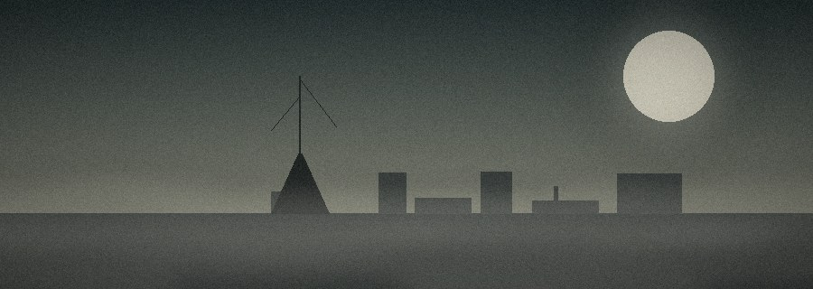

THE STORY
规则告诉你「怎么判定」，角色卡告诉你「谁在做」，而模组告诉你「发生了什么」。一个模组就是一份故事大纲：背景、线索、人物、几个关键场景，以及如果玩家不按套路走，故事还能往哪儿去。
时代：1925 年 11 月 地点：马萨诸塞州，金斯波特港 人数：3 – 4 人 时长：约 4 小时
十天前，金斯波特港的灯塔看守人哈兰·维恩给报社寄来一封信，说他「在雾里看见了不该有的东西」，请求有人来一趟。信没写完，最后一行只有半句：「它们不是从海上来，是从——」
三天后，灯塔熄灭。港务局派去的人回来说，看守人「擅离职守，已离职」。可他的私人物品还在塔里，桌上有一杯喝了一半的茶。
调查员们受报社委托前往金斯波特，任务是：找到哈兰，或者找到他为什么消失。
| 人物 | 身份 | 他知道什么 / 他想要什么 |
|---|---|---|
| 哈兰·维恩 | 灯塔看守人 | 知道沉船的真相。他不怕死，怕的是没人相信他。找到他时，他已经在塔顶待了三天。 |
| 玛莎·柯尔 | 酒馆老板娘 | 二十年前的目击者之一。她愿意说，但只对「先坐下来喝完一杯」的人说。 |
| 埃利亚斯牧师 | 教堂看守 | 知道教堂地下室的登记簿。他在替全镇人保守一个不是秘密的秘密，为此已经很多年没睡好。 |
| 汤米 | 码头少年 | 什么都不知道，但什么都能看见。给玩家提供最不靠谱、也最关键的提示。 |
下面是那次团里真实发生的一段。战报和小说不一样，它保留了很多废话、很多犹豫，还有很多掷骰的瞬间——那正是跑团的味道。
KP：你推开教堂的门，里面比外面还冷。长椅上全是灰，只有最前排有一块干净的地方，像有人常年坐在那儿。
沈砚秋（我）：我先不进去，站在门口看地上有没有脚印。
KP：过个侦查。
我：……43。我侦查 65，过了。
KP：有。一条很窄的拖痕，从侧门一直延伸到祭坛后面，像是有人拖着什么东西走过，然后又回来把灰扫平了——扫得很仔细，但漏了最里面那一截。
这就是它和多数游戏最不一样的地方：COC 没有所谓的传统意义的终点或结局，它更像一本小说自由地写着，但可能随时终止，就像我们的生命一样，充满着不确定和神秘。
想看完整的一次跑团长什么样？去示例战报《常暗之厢》——900 余条原始对话，从上车到「True End」，除了排版和几处打码，内容一字未动。